Revised direction: receiver turns onto his stomach as the hold cinches, then alternates raised fists and downward strikes. Held poses animate at normal speed with closed-hand forearm variants where available; entry/roll transition is still to be built. Whole-leg layering and boot-art limitations remain. Judge fist contact and grip reach below.
Static one-pose clips through the real runtime (tools/debug/toehold_t30_stills.mjs, poses in toehold_t30_poses.mjs). Hip lift, crouch and gap per still come from a small search that minimises grip px with a penalty for lifting the man off the mat. Known limits: layers are whole-leg, so "shin behind Lou's thigh, foot in front of his hip" cannot be split; the man's hips are lifted 0-40 px in several stills. Derek judges every visual.
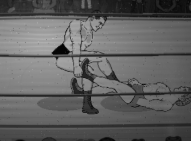 1 ankle grab |
palm to heel 0.8 px, to toe 0 px (bar 6) knee flex: attacker near 1.2 / far 1; man's trapped 0.2 (cap 2.545) near a cap: none (pinned list empty) held foot minus attacker hip y: 26.4 px (0 = hip height, + = below); attacker's body covers 0 of 798 px of the foot mat line (400): attacker knees 52 / 75.7 px above, ankles 22.3 / 50.4 px above, knee above ankle 29.7 / 25.2, seat 75.2 px above layers: back to front: his free leg, his far arm, torso, head, near arm | Lou far arm, torso, head, far leg, near leg | trapped leg | Lou near arm Receiver: on back; hip lift -110, attacker crouch 1.6, hip spacing 130.2 px. bent boot: base shin (foot not yet bent) |
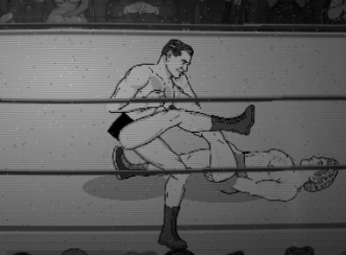 2 mid step-over |
palm to heel 0 px, to toe 0 px (bar 6) knee flex: attacker near 0.5 / far 1; man's trapped 0.5 (cap 2.545) near a cap: none (pinned list empty) held foot minus attacker hip y: -29.9 px (0 = hip height, + = below); attacker's body covers 551 of 801 px of the foot mat line (400): attacker knees 64.5 / 10.8 px above, ankles 60.2 / -18.5 px above, knee above ankle 4.3 / 29.3, seat 46.7 px above layers: Lou's near leg drawn over the raised shin (his near arm and leg over the trapped leg) Receiver: on back; hip lift -110, attacker crouch 1.2, hip spacing 100 px. bent boot: base shin (foot not yet bent) |
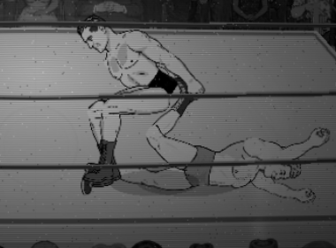 3 kneeling, leg bent |
palm to heel 0 px, to toe 0 px (bar 6) knee flex: attacker near 1.38 / far 1.58; man's trapped 1.7 (cap 2.545) near a cap: none (pinned list empty) held foot minus attacker hip y: 3.3 px (0 = hip height, + = below); attacker's body covers 0 of 793 px of the foot mat line (400): attacker knees 69.4 / 65.4 px above, ankles 39.5 / 36.8 px above, knee above ankle 29.9 / 28.6, seat 80 px above fists, lowest drawn pixel minus the mat line (neg = above), at each strike (0.30 / 0.60 / 0.90 s), near | far: 3 | 23 ; 3 | 23 ; 3 | 23 ; deepest over the preview 23 layers: trapped leg behind Lou's near leg and his arms/torso; whole-leg granularity, so shin and boot are behind the thigh too (misses) Receiver: stomach down; hip lift -110, attacker crouch 1.8, hip spacing 39.2 px. bent boot: George has no ankleTwist: base shin |
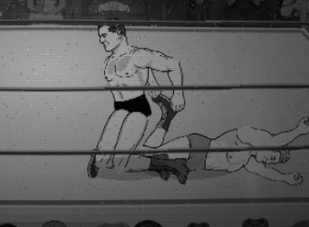 4a sit back on heels |
palm to heel 0 px, to toe 0 px (bar 6) knee flex: attacker near 1.86 / far 1.95; man's trapped 2.17 (cap 2.545) near a cap: none (pinned list empty) held foot minus attacker hip y: 2.7 px (0 = hip height, + = below); attacker's body covers 0 of 795 px of the foot mat line (400): attacker knees 0 / 3.9 px above, ankles -0.3 / 3.8 px above, knee above ankle 0.3 / 0.1, seat 53.9 px above fists, lowest drawn pixel minus the mat line (neg = above), at each strike (0.30 / 0.60 / 0.90 s), near | far: 3 | 23 ; 3 | 23 ; 3 | 23 ; deepest over the preview 23 layers: as still 3 Receiver: stomach down; hip lift -110, attacker crouch 1.2, hip spacing 70.6 px. bent boot: George has no ankleTwist: base shin |
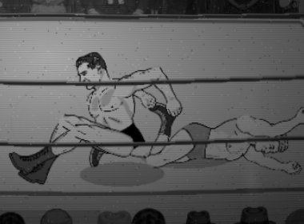 4b sit back on the mat |
palm to heel 0 px, to toe 0 px (bar 6) knee flex: attacker near 0.89 / far 1.56; man's trapped 2.45 (cap 2.545) near a cap: none (pinned list empty) held foot minus attacker hip y: -23.9 px (0 = hip height, + = below); attacker's body covers 0 of 801 px of the foot mat line (400): attacker knees 24.7 / 35.4 px above, ankles 6.8 / 7 px above, knee above ankle 17.9 / 28.4, seat 10 px above fists, lowest drawn pixel minus the mat line (neg = above), at each strike (0.30 / 0.60 / 0.90 s), near | far: 3 | 23 ; 3 | 23 ; 3 | 23 ; deepest over the preview 23 layers: as still 3 Receiver: stomach down; hip lift -110, attacker crouch 2.1, hip spacing 78.7 px. bent boot: George has no ankleTwist: base shin |
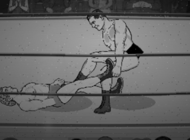 1 ankle grab |
palm to heel 0.8 px, to toe 0 px (bar 6) knee flex: attacker near 1.2 / far 1; man's trapped 0.2 (cap 2.545) near a cap: none (pinned list empty) held foot minus attacker hip y: 26.4 px (0 = hip height, + = below); attacker's body covers 0 of 783 px of the foot mat line (400): attacker knees 52 / 75.7 px above, ankles 22.3 / 50.4 px above, knee above ankle 29.7 / 25.2, seat 75.2 px above layers: back to front: his free leg, his far arm, torso, head, near arm | Lou far arm, torso, head, far leg, near leg | trapped leg | Lou near arm Receiver: on back; hip lift -110, attacker crouch 1.6, hip spacing 130.2 px. bent boot: base shin (foot not yet bent) |
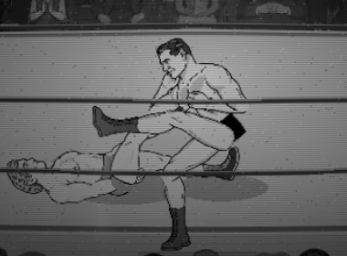 2 mid step-over |
palm to heel 0 px, to toe 0 px (bar 6) knee flex: attacker near 0.5 / far 1; man's trapped 0.5 (cap 2.545) near a cap: none (pinned list empty) held foot minus attacker hip y: -29.9 px (0 = hip height, + = below); attacker's body covers 539 of 789 px of the foot mat line (400): attacker knees 64.5 / 10.8 px above, ankles 60.2 / -18.5 px above, knee above ankle 4.3 / 29.3, seat 46.7 px above layers: Lou's near leg drawn over the raised shin (his near arm and leg over the trapped leg) Receiver: on back; hip lift -110, attacker crouch 1.2, hip spacing 100 px. bent boot: base shin (foot not yet bent) |
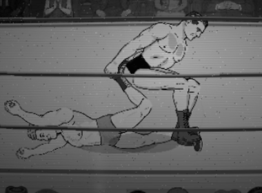 3 kneeling, leg bent |
palm to heel 0 px, to toe 0 px (bar 6) knee flex: attacker near 1.38 / far 1.58; man's trapped 1.7 (cap 2.545) near a cap: none (pinned list empty) held foot minus attacker hip y: 3.3 px (0 = hip height, + = below); attacker's body covers 0 of 803 px of the foot mat line (400): attacker knees 69.4 / 65.4 px above, ankles 39.5 / 36.8 px above, knee above ankle 29.9 / 28.6, seat 80 px above fists, lowest drawn pixel minus the mat line (neg = above), at each strike (0.30 / 0.60 / 0.90 s), near | far: 3 | 23 ; 3 | 23 ; 3 | 23 ; deepest over the preview 23 layers: trapped leg behind Lou's near leg and his arms/torso; whole-leg granularity, so shin and boot are behind the thigh too (misses) Receiver: stomach down; hip lift -110, attacker crouch 1.8, hip spacing 39.2 px. bent boot: George has no ankleTwist: base shin |
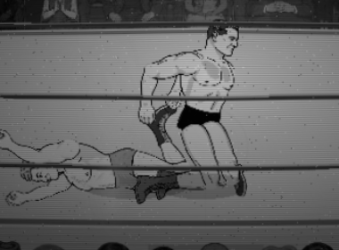 4a sit back on heels |
palm to heel 0 px, to toe 0 px (bar 6) knee flex: attacker near 1.86 / far 1.95; man's trapped 2.17 (cap 2.545) near a cap: none (pinned list empty) held foot minus attacker hip y: 2.7 px (0 = hip height, + = below); attacker's body covers 0 of 802 px of the foot mat line (400): attacker knees 0 / 3.9 px above, ankles -0.3 / 3.8 px above, knee above ankle 0.3 / 0.1, seat 53.9 px above fists, lowest drawn pixel minus the mat line (neg = above), at each strike (0.30 / 0.60 / 0.90 s), near | far: 3 | 23 ; 3 | 23 ; 3 | 23 ; deepest over the preview 23 layers: as still 3 Receiver: stomach down; hip lift -110, attacker crouch 1.2, hip spacing 70.6 px. bent boot: George has no ankleTwist: base shin |
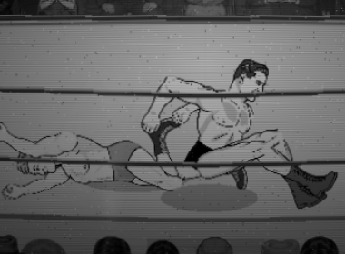 4b sit back on the mat |
palm to heel 0 px, to toe 0 px (bar 6) knee flex: attacker near 0.89 / far 1.56; man's trapped 2.45 (cap 2.545) near a cap: none (pinned list empty) held foot minus attacker hip y: -23.9 px (0 = hip height, + = below); attacker's body covers 0 of 805 px of the foot mat line (400): attacker knees 24.7 / 35.4 px above, ankles 6.8 / 7 px above, knee above ankle 17.9 / 28.4, seat 10 px above fists, lowest drawn pixel minus the mat line (neg = above), at each strike (0.30 / 0.60 / 0.90 s), near | far: 3 | 23 ; 3 | 23 ; 3 | 23 ; deepest over the preview 23 layers: as still 3 Receiver: stomach down; hip lift -110, attacker crouch 2.1, hip spacing 78.7 px. bent boot: George has no ankleTwist: base shin |
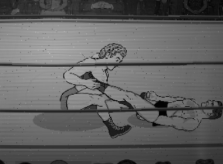 1 ankle grab |
palm to heel 0 px, to toe 0 px (bar 6) knee flex: attacker near 1.2 / far 1; man's trapped 0.2 (cap 2.545) near a cap: none (pinned list empty) held foot minus attacker hip y: -23.5 px (0 = hip height, + = below); attacker's body covers 0 of 866 px of the foot mat line (400): attacker knees 27.8 / 45.5 px above, ankles -10.2 / 24.9 px above, knee above ankle 38 / 20.5, seat 23.4 px above layers: back to front: his free leg, his far arm, torso, head, near arm | Lou far arm, torso, head, far leg, near leg | trapped leg | Lou near arm Receiver: on back; hip lift -110, attacker crouch 2.2, hip spacing 136.1 px. bent boot: base shin (foot not yet bent) |
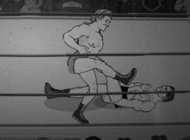 2 mid step-over |
palm to heel 0 px, to toe 0 px (bar 6) knee flex: attacker near 0.5 / far 1; man's trapped 0.5 (cap 2.545) near a cap: none (pinned list empty) held foot minus attacker hip y: -13.7 px (0 = hip height, + = below); attacker's body covers 772 of 866 px of the foot mat line (400): attacker knees 61.2 / 19.9 px above, ankles 41.2 / -17.1 px above, knee above ankle 20.1 / 37, seat 60.8 px above layers: Lou's near leg drawn over the raised shin (his near arm and leg over the trapped leg) Receiver: on back; hip lift -110, attacker crouch 0.8, hip spacing 79.3 px. bent boot: base shin (foot not yet bent) |
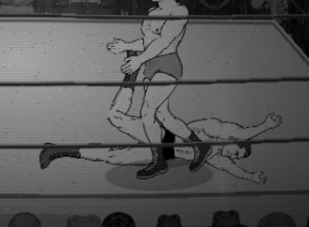 3 kneeling, leg bent |
palm to heel 0 px, to toe 0 px (bar 6) knee flex: attacker near 0.69 / far 0.59; man's trapped 1.46 (cap 2.545) near a cap: none (pinned list empty) held foot minus attacker hip y: 13.3 px (0 = hip height, + = below); attacker's body covers 0 of 870 px of the foot mat line (400): attacker knees 41.1 / 38.3 px above, ankles -2.3 / 9.2 px above, knee above ankle 43.3 / 29.1, seat 85 px above fists, lowest drawn pixel minus the mat line (neg = above), at each strike (0.30 / 0.60 / 0.90 s), near | far: 6 | 30 ; 6 | 30 ; 6 | 30 ; deepest over the preview 30 layers: trapped leg behind Lou's near leg and his arms/torso; whole-leg granularity, so shin and boot are behind the thigh too (misses) Receiver: stomach down; hip lift -110, attacker crouch 0.3, hip spacing 0 px. bent boot: Lou's ankleTwist worn; drawn for a shin hanging straight down, here the shin is folded back (judge the fit) |
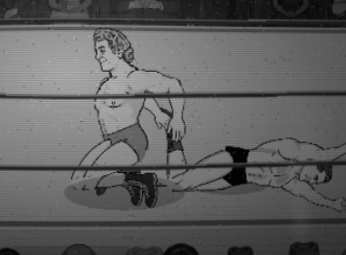 4a sit back on heels |
palm to heel 0 px, to toe 0 px (bar 6) knee flex: attacker near 2.45 / far 2.45; man's trapped 1.87 (cap 2.545) near a cap: none (pinned list empty) held foot minus attacker hip y: 2.7 px (0 = hip height, + = below); attacker's body covers 0 of 878 px of the foot mat line (400): attacker knees 2.1 / 1.1 px above, ankles 0.6 / 0.9 px above, knee above ankle 1.4 / 0.2, seat 31.1 px above fists, lowest drawn pixel minus the mat line (neg = above), at each strike (0.30 / 0.60 / 0.90 s), near | far: 6 | 30 ; 6 | 30 ; 6 | 30 ; deepest over the preview 30 layers: as still 3 Receiver: stomach down; hip lift -110, attacker crouch 1.9, hip spacing 108.8 px. bent boot: Lou's ankleTwist worn; drawn for a shin hanging straight down, here the shin is folded back (judge the fit) |
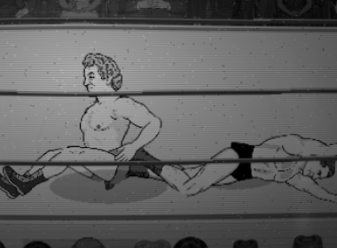 4b sit back on the mat |
palm to heel 0 px, to toe 1.3 px (bar 6) knee flex: attacker near 0.95 / far 0.97; man's trapped 1.21 (cap 2.545) near a cap: none (pinned list empty) held foot minus attacker hip y: 0.4 px (0 = hip height, + = below); attacker's body covers 0 of 870 px of the foot mat line (400): attacker knees 22 / 20.2 px above, ankles -2.8 / -6.8 px above, knee above ankle 24.8 / 27, seat 6.2 px above fists, lowest drawn pixel minus the mat line (neg = above), at each strike (0.30 / 0.60 / 0.90 s), near | far: 6 | 30 ; 6 | 30 ; 6 | 30 ; deepest over the preview 30 layers: as still 3 Receiver: stomach down; hip lift -110, attacker crouch 1.3, hip spacing 134.3 px. bent boot: Lou's ankleTwist worn; drawn for a shin hanging straight down, here the shin is folded back (judge the fit) |
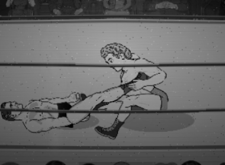 1 ankle grab |
palm to heel 0 px, to toe 0 px (bar 6) knee flex: attacker near 1.2 / far 1; man's trapped 0.2 (cap 2.545) near a cap: none (pinned list empty) held foot minus attacker hip y: -23.5 px (0 = hip height, + = below); attacker's body covers 0 of 866 px of the foot mat line (400): attacker knees 27.8 / 45.5 px above, ankles -10.2 / 24.9 px above, knee above ankle 38 / 20.5, seat 23.4 px above layers: back to front: his free leg, his far arm, torso, head, near arm | Lou far arm, torso, head, far leg, near leg | trapped leg | Lou near arm Receiver: on back; hip lift -110, attacker crouch 2.2, hip spacing 136.1 px. bent boot: base shin (foot not yet bent) |
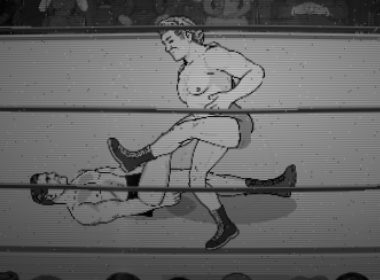 2 mid step-over |
palm to heel 0 px, to toe 0 px (bar 6) knee flex: attacker near 0.5 / far 1; man's trapped 0.5 (cap 2.545) near a cap: none (pinned list empty) held foot minus attacker hip y: -13.7 px (0 = hip height, + = below); attacker's body covers 773 of 867 px of the foot mat line (400): attacker knees 61.2 / 19.9 px above, ankles 41.2 / -17.1 px above, knee above ankle 20.1 / 37, seat 60.8 px above layers: Lou's near leg drawn over the raised shin (his near arm and leg over the trapped leg) Receiver: on back; hip lift -110, attacker crouch 0.8, hip spacing 79.3 px. bent boot: base shin (foot not yet bent) |
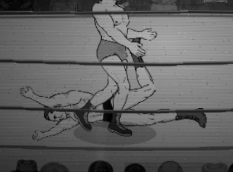 3 kneeling, leg bent |
palm to heel 0 px, to toe 0 px (bar 6) knee flex: attacker near 0.69 / far 0.59; man's trapped 1.46 (cap 2.545) near a cap: none (pinned list empty) held foot minus attacker hip y: 13.3 px (0 = hip height, + = below); attacker's body covers 0 of 870 px of the foot mat line (400): attacker knees 41.1 / 38.3 px above, ankles -2.3 / 9.2 px above, knee above ankle 43.3 / 29.1, seat 85 px above fists, lowest drawn pixel minus the mat line (neg = above), at each strike (0.30 / 0.60 / 0.90 s), near | far: 6 | 30 ; 6 | 30 ; 6 | 30 ; deepest over the preview 30 layers: trapped leg behind Lou's near leg and his arms/torso; whole-leg granularity, so shin and boot are behind the thigh too (misses) Receiver: stomach down; hip lift -110, attacker crouch 0.3, hip spacing 0 px. bent boot: Lou's ankleTwist worn; drawn for a shin hanging straight down, here the shin is folded back (judge the fit) |
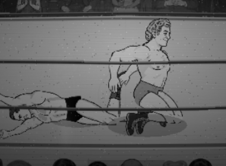 4a sit back on heels |
palm to heel 0 px, to toe 0 px (bar 6) knee flex: attacker near 2.45 / far 2.45; man's trapped 1.87 (cap 2.545) near a cap: none (pinned list empty) held foot minus attacker hip y: 2.7 px (0 = hip height, + = below); attacker's body covers 0 of 877 px of the foot mat line (400): attacker knees 2.1 / 1.1 px above, ankles 0.6 / 0.9 px above, knee above ankle 1.4 / 0.2, seat 31.1 px above fists, lowest drawn pixel minus the mat line (neg = above), at each strike (0.30 / 0.60 / 0.90 s), near | far: 6 | 30 ; 6 | 30 ; 6 | 30 ; deepest over the preview 30 layers: as still 3 Receiver: stomach down; hip lift -110, attacker crouch 1.9, hip spacing 108.8 px. bent boot: Lou's ankleTwist worn; drawn for a shin hanging straight down, here the shin is folded back (judge the fit) |
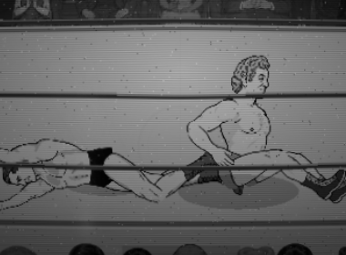 4b sit back on the mat |
palm to heel 0 px, to toe 1.3 px (bar 6) knee flex: attacker near 0.95 / far 0.97; man's trapped 1.21 (cap 2.545) near a cap: none (pinned list empty) held foot minus attacker hip y: 0.4 px (0 = hip height, + = below); attacker's body covers 0 of 869 px of the foot mat line (400): attacker knees 22 / 20.2 px above, ankles -2.8 / -6.8 px above, knee above ankle 24.8 / 27, seat 6.2 px above fists, lowest drawn pixel minus the mat line (neg = above), at each strike (0.30 / 0.60 / 0.90 s), near | far: 6 | 30 ; 6 | 30 ; 6 | 30 ; deepest over the preview 30 layers: as still 3 Receiver: stomach down; hip lift -110, attacker crouch 1.3, hip spacing 134.3 px. bent boot: Lou's ankleTwist worn; drawn for a shin hanging straight down, here the shin is folded back (judge the fit) |